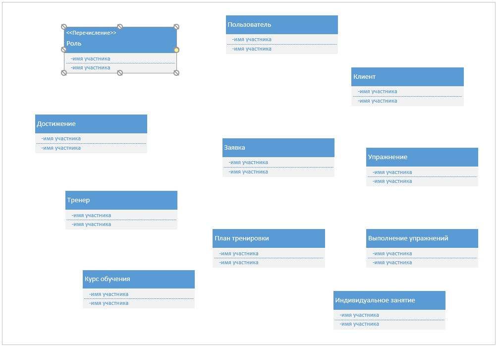
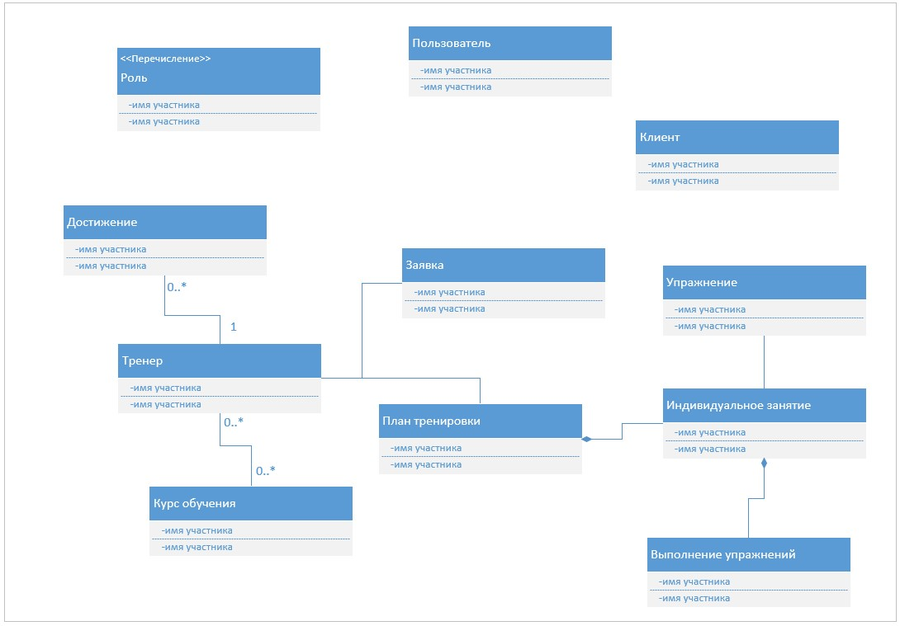
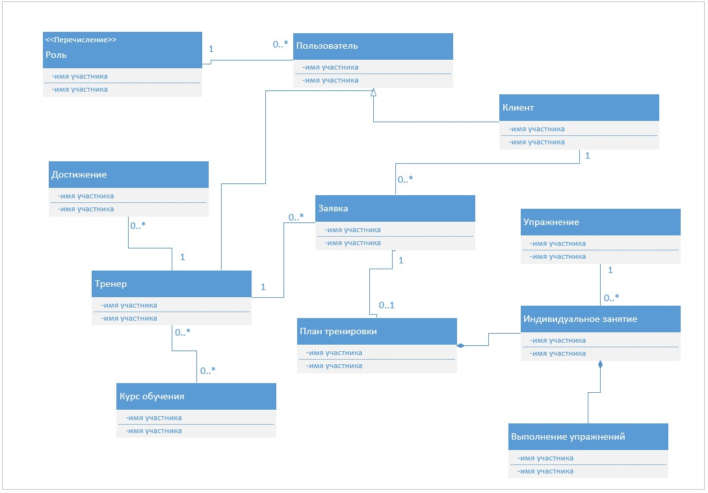
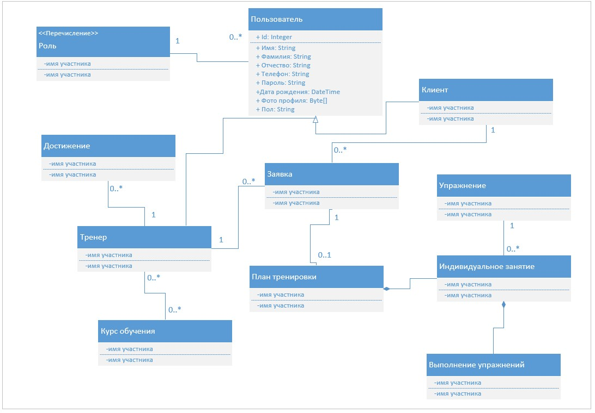
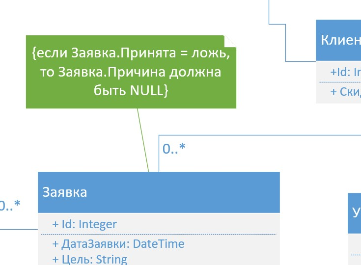
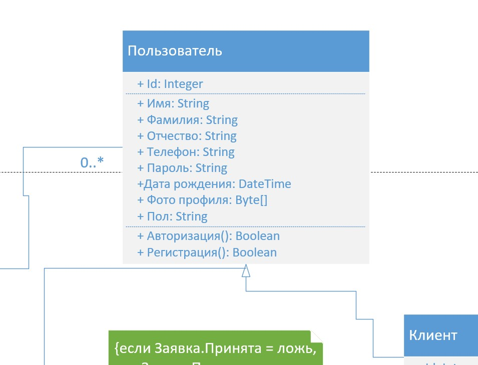

Унифицированный язык моделирования (UML)
• UML — унифицированный язык графических нотаций, в основе которого лежит единая метамодель
• UML используется для описания и проектирования программных систем, особенно построенных с использованием объектно-ориентированных (ОО) технологий
• UML как средство проектирования нацелен на полноту. Используя UML, дизайнер может строить детальные модели для программиста, который далее выполняет кодирование без глубокого погружения в детали
Диаграмма классов
Диаграмма классов описывает типы объектов системы и различного рода статические отношения, которые существуют между ними. На диаграммах классов отображаются также свойства классов, операции классов и ограничения, которые накладываются на связи между объектами
Важно
Классы могут представлять сущности предметной области (на этапе анализа) или элементы программной системы (на этапе проектирования и реализации). В данном занятии рассматривается первый случай
Пример построения диаграммы классов
В данном занятии демонстрируется построение диаграммы классов для программной системы фитнес-центра. Основные шаги построения диаграммы классов:
1. Добавление классов
2. Добавление связей и их настройка
3. Добавление атрибутов и операций
Важно
Диаграмма классов составляется в Microsoft Visio на основе описания заказчика. Используется тип диаграммы UML Class из раздела Software and Database
Добавление классов
1. Добавляем сущности на ER-диаграмму

Важно
На диаграмме класс изображается в виде прямоугольника, разделенного на три части: имя класса (на английском языке), его атрибуты и его операции. В качестве классов выступают сущности, использованные при построении диаграммы сущность-связь
2. Добавляем другие объекты

Важно
В данном примере добавляется объект «role» типа «перечисление» (англ. enumeration), представляющий собой набор логически связанных и заранее присвоенных значений (Client, Trainer, Admin)
Добавление связей и их настройка
1. Добавляем связи типа ассоциация
Важно
Ассоциация является одним из двух основных типов связи на диаграмме классов, показывающим, что можно перемещаться между объектами двух связанных классов. Пример ассоциации — «Trainer-TrainingCourse»
2. Добавляем связи типа композиция
Важно
Композиция — частный случай ассоциации, представляющий собой отношение типа «часть-целое». Композиция имеет четко выраженные отношения владения, а также характеризуется совпадением времени жизни части и целого. Композиция имеет жесткую зависимость времени существования экземпляров класса контейнера и экземпляров содержащихся классов. Если контейнер будет уничтожен, то все его содержимое будет также уничтожено. Пример композиции — связь «TrainingPlan-PersonalTraining»
3. Проставляем кратность связей

Важно
Кратность связи или множественность ассоциации — диапазон целых чисел, указывающий возможное количество связанных объектов. Кратность задается путем указания минимального и максимального количества объектов, разделенных двумя точками. Варианты кратности связи: 1 (единица), 0.1 (ноль или один), 0.* (любое значение) и 1.* (один или несколько)
4. Добавляем связи типа наследование

Важно
Наследование (inheritance) — отношение типа «общее-частное», при котором один класс обладает поведением и структурой ряда других классов. Пример наследования — связь «Trainer-User»
Добавление атрибутов и операций
1. Добавляем атрибуты

Важно
Атрибут описывает свойство класса в виде строки текста, имеющей в общем случае следующую структуру: «visibility name: type = defaultValue», где visibility определяет область видимости (public, private или protected), name есть имя атрибута, type определяет тип атрибута, а defaultValue — его значение по умолчанию (для числовых или булевых переменных)
2. Добавляем заметки

Важно
В заметках можно указывать ограничения. В данном примере добавляется следующее ограничение: если заявка не принята, то должна быть указана причина
3. Добавляем операции

Важно
Операции — действия, реализуемые некоторым классом, т. е. по сути методы класса. Общая форма записи операции: visibility name (parameter-list): return-type-expression, т. е. область видимости, имя операции, список параметров, тип возвращаемого значения
Итоги
Итак, вы познакомились с правилами построения диаграммы классов UML.